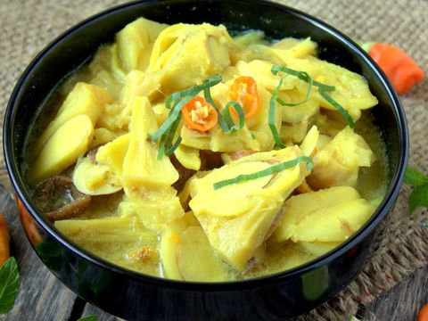

Ayam bakar Padang
Ayam diungkep bersama santan dan bumbu kuning sampai meresap, barulah dibakar. Menjadikan ayam bakar padang rasa bumbunya lebih terasa.
Beli

Gulai nangka
Nangka muda ternyata enak dimasak dengan beragam bumbu. Dibuat gudeg semi basah
Beli
Brongkos daging sapi
brongkos daging sapi khas Jawa Tengah yang dipadukan dengan sayur kangkung balacan bisa jadi pilihan masakan rumahan terbaik
Beli